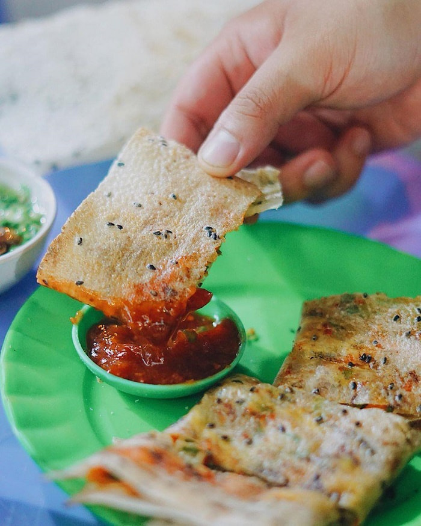
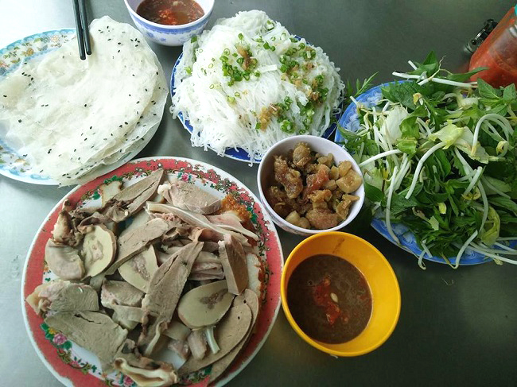
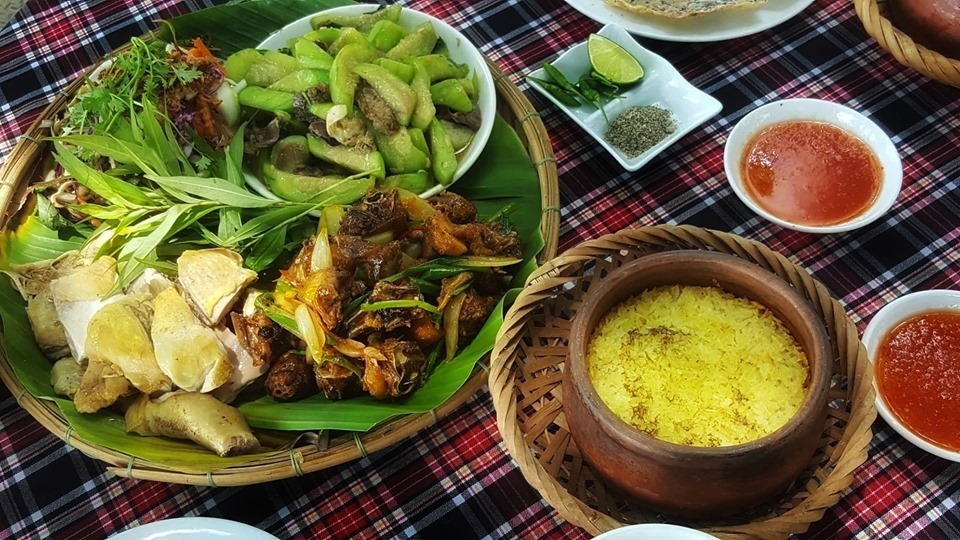

Đặc sản Phan Rang (Ninh Thuận) đầu tiên là món bánh tráng mắm ruốc, người dân Phan Rang thường nói đùa một câu: "Hẳn tuổi thơ ai mà chưa ăn món này thì không phải là người Ninh Thuận".

Bánh tráng tương - mỡ hành
Địa chỉ ăn nổi tiếng:
Quảng trường 16/4, địa chỉ: đường Yên Ninh - Tp Phan Rang Tháp Chàm.
Khu chợ đêm Dư Khánh, địa chỉ: thôn Dư Khánh - thị trấn Khánh Hải - huyện Ninh Hải.
Biển Ninh Chữ, địa chỉ: Thị Trấn Khánh Hải - huyện Ninh Hải.
2. Bánh hỏi lòng heo Phan Rang
Nhắc đến những món ngon đặc sản của Phan Rang - Ninh Thuận thì nhất định phải nhắc đến món này, món bánh hỏi lòng heo. Khi ăn, dùng bánh tráng (bánh đa) mỏng dẻo, cuốn chung rau, bánh hỏi, lòng heo và chấm ngập trong chén nước mắm.

Bánh hỏi lòng heo Phan Rang
Địa chỉ ăn nổi tiếng:
Quán bánh hỏi lòng heo Cây Đa, địa chỉ: khu chợ đêm Cây Đa - Dư Khánh - thị trấn Khánh Hải - huyện Ninh Hải.
Quán bánh hỏi Lòng Heo, địa chỉ: Chợ Phan Rang - đường Thống Nhất - thành phố Phan Rang.
3. Cơm Gà đặc sản Phan Rang (Ninh Thuận) trứ danh
Đặc sản cơm Gà Phan Rang xếp đầu tiên trong bản danh sách đặc sản trứ danh của vùng đất nắng gió, cơm gà là món ăn nhất định bạn phải thử một lần khi đến du lịch tại Phan Rang - Ninh Thuận.

Cơm gà Phan Rang
Địa chỉ ăn nổi tiếng:
Cơm gà Phước Thạnh, địa chỉ: số 354 đường Ngô gia Tự - phường Tấn Tài - thành phố Phan Rang.